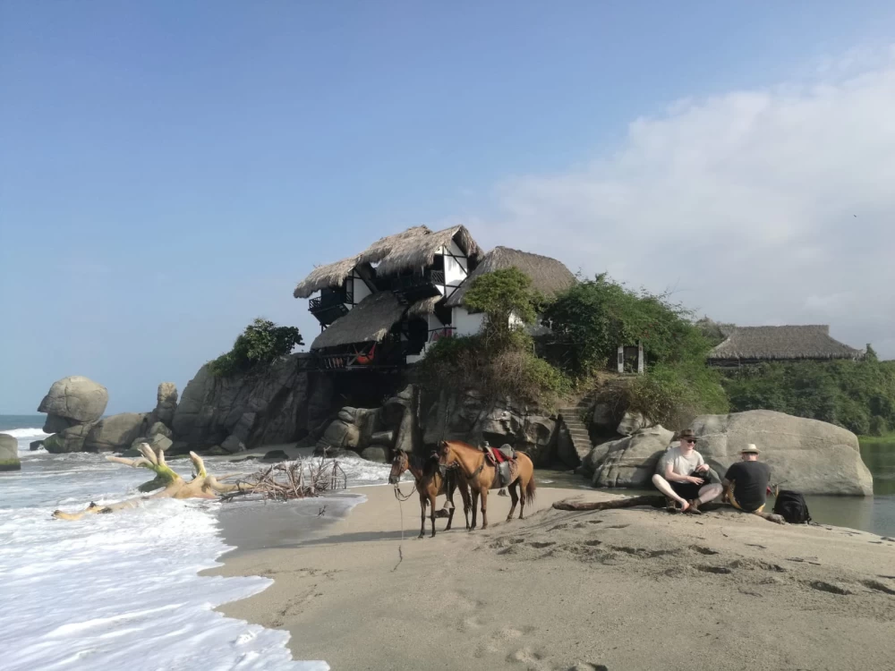
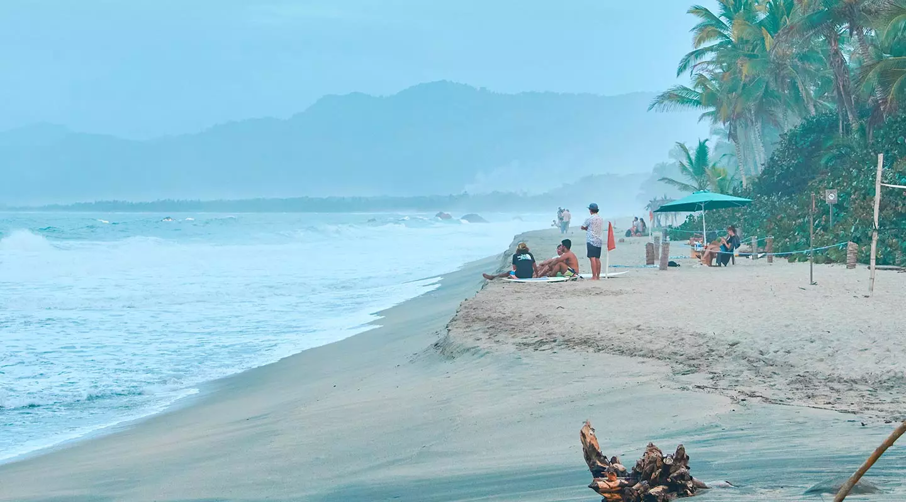
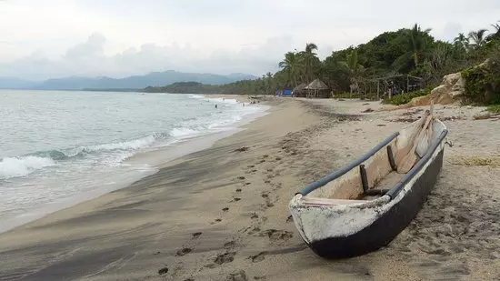
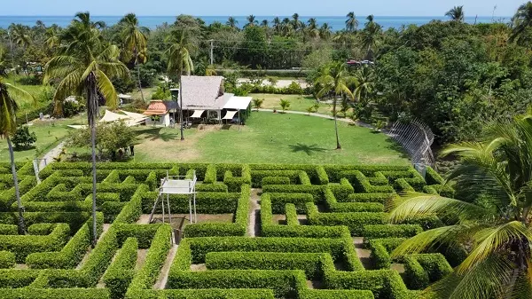

Sumérgete en la magia del Tayrona, ubicado a solo 5 minutos en transporte o 15 minutos caminando desde nuestra finca. Descubre playas paradisíacas, exuberante vegetación y una biodiversidad única en este destino de ensueño. Perfecto para los amantes de la naturaleza y la aventura, te brindamos un punto de partida ideal para vivir esta experiencia inolvidable. ¡Conéctate con la esencia del Caribe colombiano!

Vive una experiencia única cabalgando junto al hermoso Río de los Naranjos, rodeado de paisajes naturales que te conectarán con la tranquilidad y la belleza de la Sierra. Disfruta del sonido del agua y la brisa fresca mientras exploras este paraíso en compañía de guías expertos. Perfecto para quienes buscan aventura, relajación y una conexión especial con la naturaleza. ¡Déjate llevar por el ritmo de la montaña!

A pocos minutos del Parque Tayrona, Playa Los Ángeles te espera con su arena dorada, imponentes palmeras y el sonido relajante del mar. Este paraíso poco concurrido es perfecto para quienes buscan tranquilidad y conexión con la naturaleza. Déjate envolver por la belleza salvaje del Caribe colombiano y vive momentos inolvidables en un entorno único. ¡El escape ideal para disfrutar del sol y la serenidad!

A solo 3 km de Finca Natural Mystic, Playa Los Cocos te invita a disfrutar de un ambiente relajado y auténtico. Esta playa pública, conocida por su encanto natural y su comunidad de pescadores, ofrece un espacio perfecto para descansar, caminar por la orilla y conectar con la vida local. Déjate conquistar por la esencia del Caribe y vive una experiencia sencilla pero inolvidable junto al mar.

Ubicado a solo 4 km de Finca Natural Mystic, el Laberinto de Macondo es un lugar único que evoca el realismo mágico de Gabriel García Márquez. Recorre sus caminos rodeados de naturaleza mientras te sumerges en una experiencia que combina arte, cultura y aventura. Ideal para explorar y desconectar, este destino te invita a vivir la magia del Caribe de una manera diferente. ¡Un viaje inolvidable a la esencia de Macondo!
Vive una experiencia sensorial única en el Hotel Resort Mendihuaca, ubicado a 10min en autobus desde Finca Natural Mystic. Disfruta de un masaje chocolatero que combina técnicas de relajación con los beneficios del cacao, dejando tu piel renovada y tu mente en calma. Rodeado por un ambiente tropical, este tratamiento es perfecto para recargar energías y consentirte en plena conexión con la naturaleza. ¡Un momento de puro bienestar te espera!
Síguenos en Instagram
@fincanaturalmystic
(C) copyright 2025 FINCA NATURAL MYSTIC. RNT 168119. Diseñado por ADC MAKER